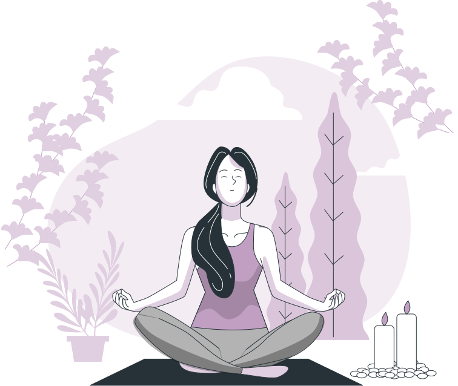
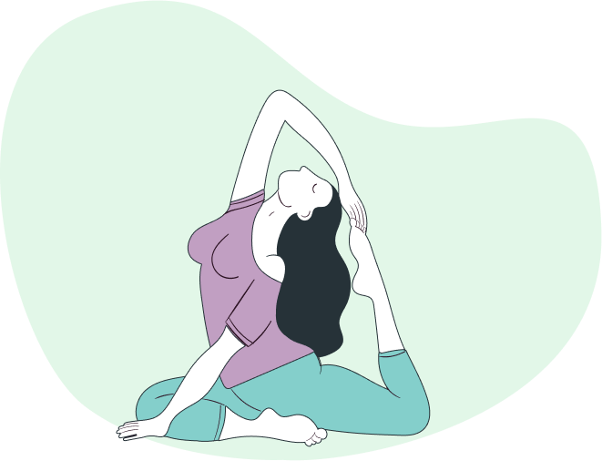
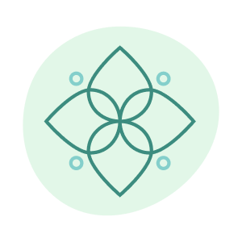
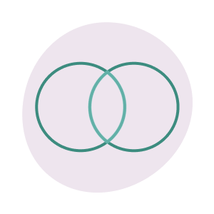
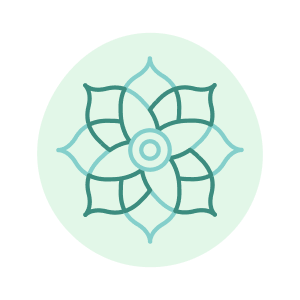
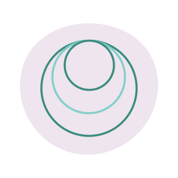
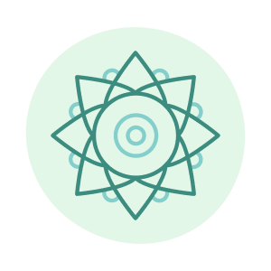
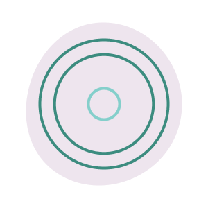

NAMASTE - погрузись в мир йоги
Познайте искусство йоги: ее разнообразие, исцеляющую силу асан и многое другое.

Что такое йога?
Йога – это древняя и уникальная практика, объединяющая тело, разум и душу. История йоги начинается в Древней Индии более 5000 лет назад.

Современная йога
В наше время йога стала популярной и распространенной практикой по всему миру.
Она не только внесла изменения в физическое здоровье, но и оказала глубокое влияние на эмоциональное и духовное благополучие людей.
Современные практикующие находят в йоге способ достижения баланса, умиротворения и гармонии в нашем быстро меняющемся мире.
Она не только внесла изменения в физическое здоровье, но и оказала глубокое влияние на эмоциональное и духовное благополучие людей.
Современные практикующие находят в йоге способ достижения баланса, умиротворения и гармонии в нашем быстро меняющемся мире.
Популярные виды йоги
Несмотря на простоту некоторых асан, движения и позы полны смысла и затрагивают глубины вашего организма.
Ниже описаны основные и популярные разновидности.

Хатха-йога
Классическая разновидность.
Цель – создание баланса между телом, умом и энергией.
Поза (асана) удерживается от нескольких секунд до нескольких минут. Практикуются пранаямы, дыхательные движения.
Цель – создание баланса между телом, умом и энергией.
Поза (асана) удерживается от нескольких секунд до нескольких минут. Практикуются пранаямы, дыхательные движения.

Кундалини-йога
Цель — разбудить энергию кундалини (жизненную энергию) и распространить её по всему телу.
Кундалини-йога помогает контролировать свои эмоции, мысли и желания. Вы научитесь чувствовать тело и ощущать присутствие «здесь и сейчас».
Кундалини-йога помогает контролировать свои эмоции, мысли и желания. Вы научитесь чувствовать тело и ощущать присутствие «здесь и сейчас».

Йога-флоу
Это йога в потоке. Каждое упражнение плавно перетекает в другое. При этом вы одновременно выполняете дыхательные практики.
Занятия проходят медленно и монотонно, что помогает снизить напряжение и расслабиться.
Занятия проходят медленно и монотонно, что помогает снизить напряжение и расслабиться.

Аштанга-виньяса йога
Можно сравнить с хорошей кардиотренировкой — это одно из самых активных направлений. При этом важно выполнять все асаны чётко и правильно.

Бикрам-йога
Занятия состоят из 26 поз, практикуемых в помещении, нагретом до 40°C.
Цель — использовать высокую температуру, чтобы вызвать обильное потоотделение и расслабить мышцы.
Цель — использовать высокую температуру, чтобы вызвать обильное потоотделение и расслабить мышцы.

Аэройога
Это один из мягких способов прокачать свою растяжку. Главный принцип — растяжение через расслабление.
Асаны выполняются в гамаке.
Асаны выполняются в гамаке.
Асаны
Асана в переводе с санскрита означает «устойчивое положение тела». Такие позы активизируют различные системы организма и насыщают каждую клеточку энергией.
При этом важно не просто оставаться в конкретном положении, но и правильно дышать.
При этом важно не просто оставаться в конкретном положении, но и правильно дышать.
Адхо Мукха Шванасана — собака мордой вниз

Падмасана - поза лотоса

Ардха Уттанасана — половинная поза вытяжения

Вирабхадрасана III - поза воина III

Врикшасана - поза дерева

Вирабхадрасана I - поза воина I

Практики
Делюсь ссылками на любимые youtube-каналы, где собрано множество практик йоги для любого уровня подготовки.